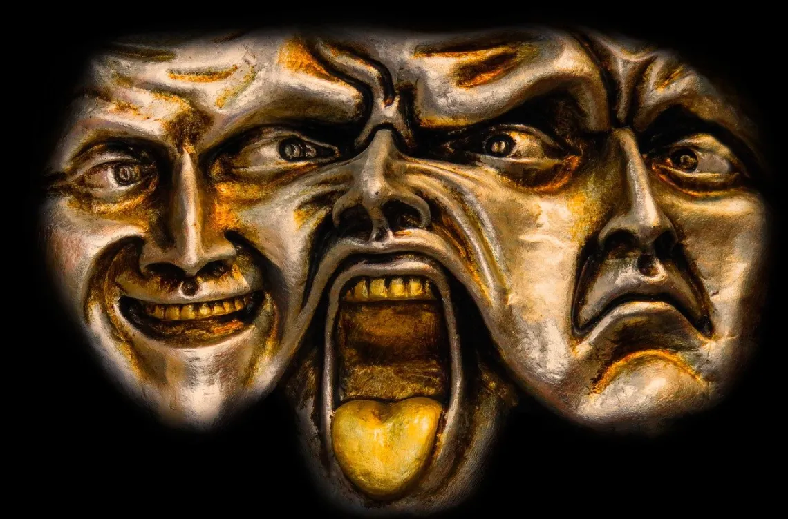
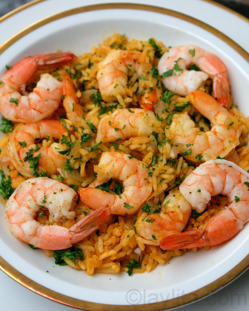
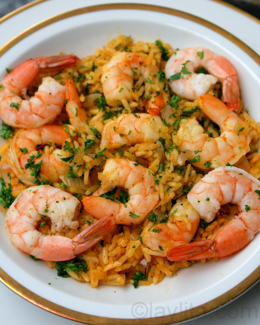

Darli Godínez
Datos personales
- Edad: 15 años
- Lugar de residencia: La Florida
- Fecha de nacimiento: 01/09/2009
Contactos
- Teléfono: 56151740
- Facebook: DARLI VASQUEZ
- TikTok: DARLI VASQUEZ
- Instagram: DARLI VASQUEZ
Hobbies
Fobias

Comidas favoritas
 


Datos académicos
- Tercero básico: 2025 Kjell
- Segundo básico: 2024 Kjell
- Primero básico: 2023 Kjell
- Sexto primaria: 2022 Escuela La Florida
- Quinto primaria: 2021 Escuela La Florida
- Cuarto primaria: 2020 Escuela La Florida
- Tercero primaria: 2019 Escuela La Florida
- Segundo primaria: 2018 Escuela La Florida
- Primero primaria: 2017 Escuela La Florida
Otras preferencias
- Equipo favorito: Real Madrid
- Jugador favorito: Cristiano Ronaldo
- Color favorito: Rosado
- Animal favorito: Conejo
- Época favorita: Verano